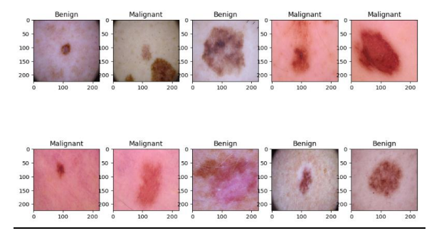
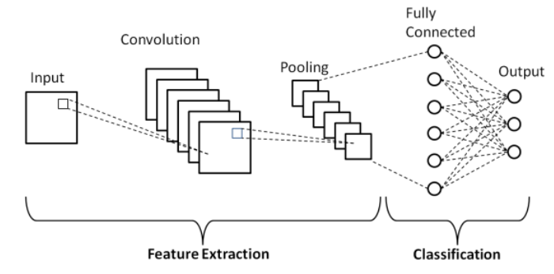
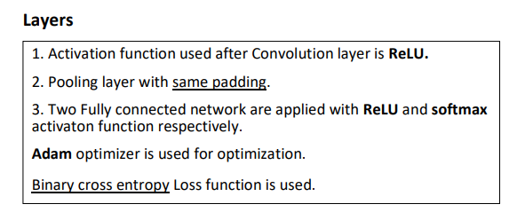
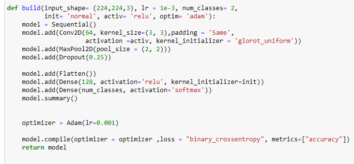
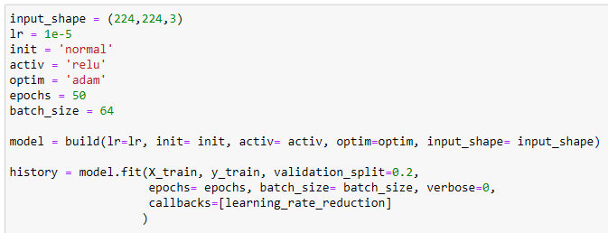
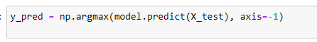
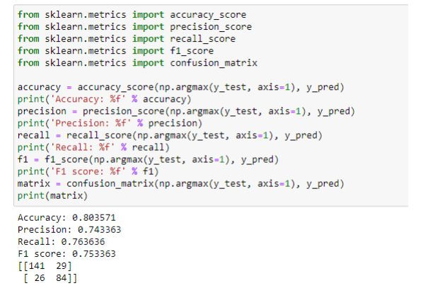
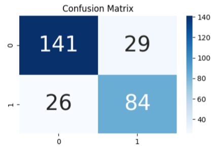

Skin Cancer Detection
Introduction
Skin cancer is the most common human malignancy, is primarily diagnosed
visually, beginning with an initial clinical screening and followed potentially by
dermoscopic analysis, a biopsy and histopathological examination. Automated
classification of skin lesions using images is a challenging task owing to the
fine-grained variability in the appearance of skin lesions.
Dataset
Data Analysis
Data analysis refers to the process of manipulating raw data to uncover useful insights and draw conclusions.
The dataset is taken from the ISIC (International Skin Image Collaboration)
Archive. It consists of 1800 pictures of benign moles and 1497 pictures of
malignant classified moles. The pictures have all been resized to low resolution
(224x224x3) RGB. The task of this kernel is to create a model, which can
classify a mole visually into benign and malignant.
As the dataset is pretty balanced, the model will be tested on the accuracy
score, thus (TP + TN)/(ALL).
It has 2 different classes of skin cancer which are listed below :
- Benign
- Malignant
Some images that dataset have
Training and Testing of Model
Training data is the subset of original data that is used to train the machine learning model, whereas testing data is used to check the accuracy of the model. The training dataset is generally larger in size compared to the testing dataset.
Libraries used in the code
NumPy
Pandas
Sklearn
Keras
Tensorflow
Matplotlib
Seaborn
Building a Convolutional Neural Network
Convolution Layer
As the image data progresses through the layers of the CNN, it starts to recognize larger elements or shapes of the object until it finally identifies the intended object. The convolutional layer is the core building block of a CNN, and it is where the majority of computation occurs.
Pooling Layer
It is similar to the convolution layer but instead of taking a dot product between the input and the kernel we take the max of the region from the input overlapped by the kernel.
Fully connected layer
The Fully Connected (FC) layer consists of the weights and biases along with the neurons and is used to connect the neurons between two different layers. These layers are usually placed before the output layer and form the last few layers of a CNN Architecture.
Fitting the model
Some definitions
Activation functions
The common problem in most of the learning is how the gradient flows in the network because in some cases gradient is sharp and in some it is slow or even zero. This creates problem in optimal selection techniques for learning parameters. The Activation functions are designed to overcome issues of gradient like vanishing and exploring of gradient. Activation functions are defined as a function used in ANN to compute the weighted sum of input and biases and is use to decide whether a neuron will get activated or not. It manipulates the input via. some gradient processes like gradient descent and then produce output for ANN. These activation functions are termed as transfer function.
ReLU
A rectified linear unit (ReLU) is an activation function that introduces the property of non-linearity to a deep learning model and solves the vanishing gradients issue. It interprets the positive part of its argument. It is one of the most popular activation functions in deep learning. ReLU performs threshold operation to each input element where value is less than 0 are set to 0. The functional form of ReLU is :

The function rectifies the value of the input less than 0 therby forcing them zero and elimination vanishing gradient problem. It has limitation of overfitting that is overcome by dropout technique.
Predictions
Conclusions of the results
We can conclude that from the given images in the dataset our model was trained on the training images and tested on testing images and given the impressive results.
 Link for the code
mohdzain98/Skin_cancer_detection(:github.com) mohdzain98/Skin_cancer_detection(:github.com)References
- Github Repository
- ISIC website for dataset
- Sklearn official website
- keras official website
© 2022 Mohd Zain
Powered by Bootstrap
Published on : 07 Sep,2022
Updated on : 01 sep,2023 Version:1.7
Updated on : 01 sep,2023 Version:1.7